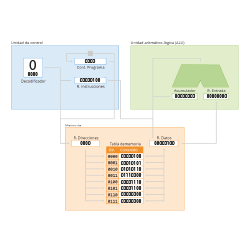
Máquina de von Neumann
Fundamentos del Hardware
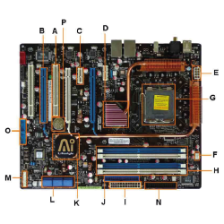
Componentes de placa base
Fundamentos del Hardware
Introducción
Formación y Orientación Laboral
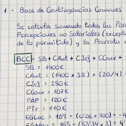
Nómina
Formación y Orientación Laboral
Test de Personalidad
Formación y Orientación Laboral
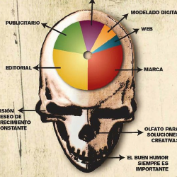
CV
Formación y Orientación Laboral
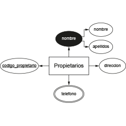
Diagrama de Chen
Gestión de Base de Datos
Diagrama de Chen II
Gestión de Base de Datos
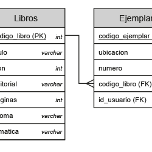
Relaciones entre tablas
Gestión de Base de Datos
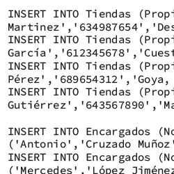
SQL
Gestión de Base de Datos
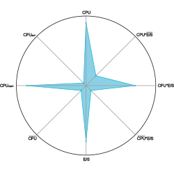
Kiviatt-Kent
Implantación de SSOO
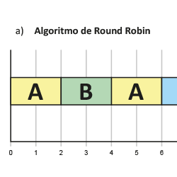
Algoritmos
Implantación de SSOO
Linux
Implantación de SSOO
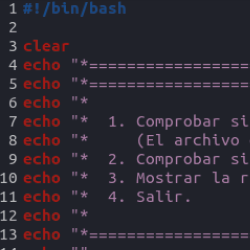
Linux Scripts
Implantación de SSOO
HTML
Lenguaje de Marcas
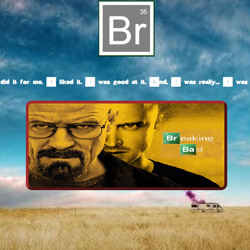
CSS
Lenguaje de Marcas
Introducción
Planificación de Redes
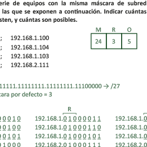
IPv4
Planificación de Redes
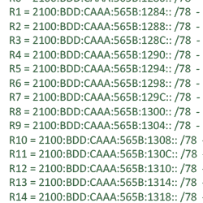
IPv6
Planificación de Redes